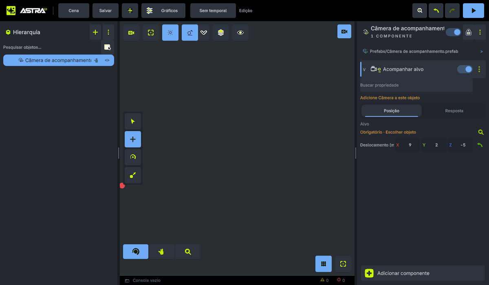
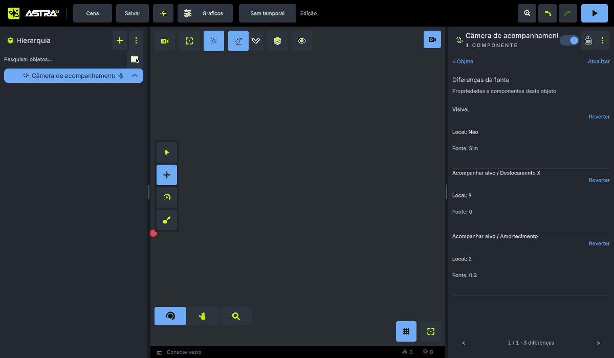
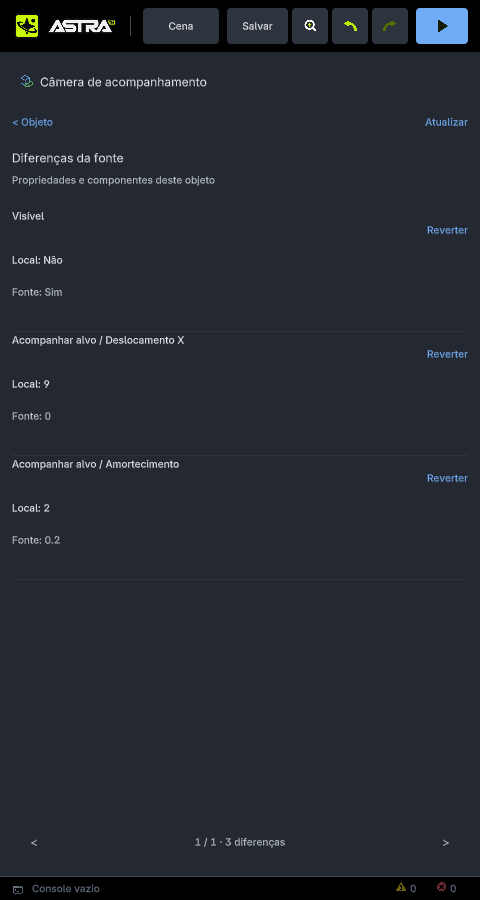

Auditoria técnica e visual · parte 1 · 30 setembro 2026
O que falta entre possuir um componente e oferecer um workflow completo
O bloco atual de objetos, scripts e prefabs é necessário, mas não basta para fechar as lacunas de API, componentes e experiência de edição. A base evoluiu de verdade; o risco está em medir conclusão por quantidade de nomes e por telas isoladas.
Astra: codex/gameplay-runtime · fb6e94ba (29/09/2026). Recorte: objetos, componentes, Inspector, prefabs e uma amostra vertical de CameraFollow. Pesquisa e revisão de código; sem alterações na engine nesta rodada.
Atualização de execução em 30/09: este documento conserva a auditoria anterior à implementação. A escrita vetorial atômica e LateUpdate no Step foram corrigidos; abas Componentes/Inspeção, ícones, testes host e build Android avançaram. Veja o registro de execução e pendências reais. O bloco completo e a validação no aparelho permanecem em andamento.
1. O que foi efetivamente inspecionado
Li o bloco vigente, o plano de expansão e os caminhos de modelo, serialização, runtime, API C# e UI relacionados. Inspecionei quadros selecionados de dois vídeos oficiais da Unity no navegador, incluindo três quadros consecutivos de uma edição de propriedade. Cruzei o workflow histórico com documentação Unity 6 (6000.0), Cinemachine 3.1.7 e Godot 4.5. O código C# público da Unity ajuda a entender operações do editor; não revela todo o backend nativo proprietário.
Limites da evidência: isto não é uma revisão de todos os quadros dos 7min43s do vídeo, nem uma auditoria de toda a engine. Os timestamps abaixo identificam a amostra observada. As legendas automáticas complementaram a leitura. As imagens Astra são capturas reais do rasterizador host de 29/09, existentes no repositório no mesmo HEAD; não são mockups nem capturas Android desta rodada. O ADB não encontrou dispositivo conectado. Nenhum build, teste de engine ou cenário de Play foi executado novamente.
Não atribuo percentual de “paridade com Unity”. Os inventários contam universos diferentes: componente, variante, receita e operação de Inspector não são unidades equivalentes.
| Base atual confirmada | O que significa | O que não prova |
|---|
| 15 schemas, em seis famílias | Registro nativo organizado por domínio. | 15 sistemas completos equivalentes aos da Unity. |
| 14 fachadas C# geradas | API tipada por componente; Behavior possui caminho próprio. | API geral de tempo, cenas, áudio e persistência de jogo completa. |
| Prefab persistente e instanciação | Recurso, GUID, remapeamento de objetos, vínculos e Unpack existentes. | Propagação, herança e composição aninhada completas. |
| Comparação e Revert seletivo | Diferenças inspecionáveis com transação de histórico. | Modelo completo de overrides ou Apply para a fonte. |
Base: native/scene/schemas/, managed/Astra.Scripting/Generated/Components.g.cs, native/runtime/prefab.cpp, native/editor/editor_prefab*.cpp. Primitivas de criação são receitas; PrefabLink e ImportLink são metadados. Não os somei como novos componentes de gameplay.
2. O que os vídeos mostram e o que isso exige da Astra
Unity — Improved Prefab Workflows: Nested Prefabs, Prefab Mode and Prefab Variants, demonstração histórica de 2018. Serve para observar interação; a documentação 6000.0 é a referência versionada de comportamento.
| Quadro observado | Observação visual | Exigência para a Astra — análise própria |
|---|
| 00:55 / 01:20 | Fonte isolada, breadcrumb e contexto da cena. | Documento da fonte separado; voltar recupera seleção, câmera e estado da cena. É a rota contextual já aprovada pelo usuário. |
| 02:35.000 / .033 / .067 | Três quadros consecutivos do campo Speed = 12, em Nav Mesh Agent; permanecem no mesmo estado de edição. | Um campo numérico depende de um sistema de navegação real. A presença de prefabs não fornece esse runtime. |
| 03:20 | Overrides abre comparação Prefab Source / Override; Speed 4 / 12 e ações Apply/Revert. | Identidade de propriedade, origem, unidade, revisão e destino da escrita precisam ser conhecidos. |
| 04:30 | Breadcrumb entra no Marker aninhado; instâncias continuam visíveis no contexto. | Composição por referência, detecção de ciclos e identificação do dono da alteração. |
| 05:50 / 06:55 | Trecho de variantes; vários robôs e edição da fonte no contexto. | Herança exige precedência de alterações e atualização das dependências. Os quadros isolados não provam toda a propagação; a explicação vem também das legendas. |
Unity — Improved Prefab workflows: inspecionei 00:50 e 01:20 e li as legendas. É uma entrevista sobre pesquisa de UX, não uma demonstração detalhada de propriedades. O relato mostra investigação com usuários e protótipos antes da solução; o problema encontrado era mais amplo que simplesmente permitir nesting. A consequência para este projeto é minha: medir tarefas completas, não aprovar cada painel isoladamente.
O teste útil para Astra é um pequeno inimigo reutilizável: criar → configurar colisão e script → salvar prefab → instanciar três vezes → alterar apenas uma instância → atualizar a fonte → preservar a alteração local → salvar/reabrir → Play. Esse cenário liga capacidades que uma comparação de imagens sozinha não verifica.
3. Comparação visual: contexto e informação útil
NÃO IREI SER SIMPLISTA NO DESIGN. A comparação abaixo avalia descoberta de alterações, legibilidade, continuidade da seleção e custo de navegação. Não é uma proposta de copiar o visual desktop da Unity.
 Unity 6: imagem oficial do Inspector. O estado de override acompanha a propriedade. Fonte.
Unity 6: imagem oficial do Inspector. O estado de override acompanha a propriedade. Fonte.

Astra, captura host 29/09: componente em foco. O cenário possui alvo não atribuído e diagnóstico de Camera ausente; é fixture de inspeção/diferenças, não demonstração de câmera funcional em Play. Unity 6: comparação organizada pela estrutura do objeto. Imagem documental, não extraída do vídeo.
Unity 6: comparação organizada pela estrutura do objeto. Imagem documental, não extraída do vídeo.

Astra, captura host 29/09: valores atuais e da fonte, ações explícitas de reversão e paginação.
Retrato: superfície dedicada permite ler a comparação, mas afasta a edição do contexto do objeto.
 Godot 4.5: retorno à fonte acessível junto ao campo. Tutorial oficial.
Godot 4.5: retorno à fonte acessível junto ao campo. Tutorial oficial.O tutorial também distingue alterar um valor da instância e editar um recurso compartilhado: PhysicsMaterial precisa de Make Unique para aquela edição local. Para a Astra, ownership do recurso deve ser explícito; duplicar um objeto não pode sugerir automaticamente que seus materiais se tornaram independentes.
O que está bom e o que limita o fluxo
A Astra já informa fonte, valores e ação de reversão. O estado desatualizado bloqueia uma operação insegura. Isso tem valor funcional. O problema não se resolve trocando cor e padding:
- Perda da visão dos componentes.
editor_screen.cpp:4885 substitui a lista por um único componente quando há foco. É uma escolha útil para espaço mobile, mas o usuário perde uma visão rápida dos vizinhos e das dependências.
- Paginação de diferenças.
buildPrefabOverrides, linha 5267, reserva linhas de 124 unidades e divide pela altura disponível. A captura landscape mostra três diferenças por página. Hipótese de escala: 30 diferenças, nessa mesma capacidade, exigiriam dez páginas; chegar à última custa nove avanços. É cálculo do layout, não medição em aparelho.
- Comparação afastada do campo. O Inspector não oferece ainda o mesmo acesso contextual a origem e alteração por propriedade. A seta de reset existente não deve ser tratada como se fosse, automaticamente, “reverter para a fonte do prefab”.
- Valores técnicos. O comparador usa representações textuais; referências de recursos precisam também de identidade legível e navegação, sem substituir GUID estável por nome ambíguo.
Proposta estrutural, ainda não implementada
Manter uma faixa compacta com objeto, fonte e índice de componentes; permitir foco profundo sem perder o caminho de volta. Tocar no indicador de uma propriedade abre origem, valor herdado, valor local e ações válidas. A comparação completa ocupa temporariamente a superfície contextual, com busca, grupos por objeto/componente e seleção de alterações. Em tela larga, duas colunas; no telefone, a mesma propriedade com os dois valores próximos.
Essa solução usa a rota contextual de prefab já escolhida pelo usuário. Não exige manter Hierarchy, Inspector, Assets e Console abertos ao mesmo tempo. Os estados necessários são: sem alterações, alteração local, fonte atualizada, referência ausente, operação bloqueada em Play e conflito de revisão. Só devem aparecer quando existir suporte real no modelo.
4. Prefabs: a dependência que precisa vir antes dos botões
O código atual possui base serializada em PrefabLink; portanto, seria incorreto dizer que não existe baseline. Porém, a comparação atual usa essa base para conferir compatibilidade estrutural e calcula diferenças entre instância e fonte atual. Isso não equivale a resolver a origem de cada alteração.
Fonte no momento da instanciação: velocidade = 4
Instância sem edição local: velocidade = 4
Fonte atualizada posteriormente: velocidade = 8
Diferença atual: 4 ≠ 8
Pergunta necessária: o 4 é uma decisão local ou um valor herdado antigo?
Hoje a UI se apresenta como comparação de diferenças; isso é honesto. O risco surge se esse resultado for usado como definição de override para propagação. Preservar toda diferença manteria valores antigos que deveriam herdar a fonte; sobrescrever toda diferença destruiria ajustes locais.
Identidade estável + revisão da fonte
↓
Origem/intenção da alteração por propriedade e estrutura
↓
Resolução fonte anterior × fonte atual × instância
↓
Apply/Revert transacionais + atualização das dependências
↓
Editor da fonte com contexto preservado
↓
Composição aninhada e variantes com precedência explícita
| Capacidade | Astra atual | Dependência / trabalho restante | Plano vigente |
|---|
| Criar recurso / instanciar | Implementado no código: captura, persistência, GUID, remapeamento e vínculo. | Reutilizar esse caminho; não reescrever como novo manager. | Etapa 6 entregue. |
| Unpack | Remove vínculos mantendo os objetos; possui tratamento de fonte ausente. | Distinguir isso de apagar recurso ou aplicar alterações. | Base entregue. |
| Diferenças e Revert | Seleção atual, campos nativos e C#; fallback explícito para componente inteiro quando não há diferença fina representável. Proteções de revisão e Undo. | Granularidade de coleções; agrupamento por árvore; origem e recursos. Android do novo Revert permanece sem nova evidência nesta auditoria. | Etapa 7 parcial. |
| Apply / propagação | Ausente no caminho auditado. | Intenção local, resolução de conflitos, destino correto, transação de fonte/registro/documentos e invalidação das instâncias. | Etapa 7 prevê; precisa explicitar esses subpassos. |
| Mudanças estruturais | Comparação rejeita topologias incompatíveis. | Adicionar/remover componente ou filho, reparenting, referências e tombstones com identidade estável. | Previsto, ainda não entregue. |
| Editar a fonte | Sem rota completa de autoria contextual. | Documento e histórico da fonte; voltar à cena preservando seleção/câmera; tratamento de edição pendente. | Etapa 8. |
| Aninhados / variantes | Captura recusa objetos já vinculados; não há composição equivalente. | Grafo de recursos, ciclos, source ownership, camadas de alterações e ordem de resolução. | Etapa 9. |
Uma chave de alteração pode reutilizar GUID da fonte, ID do objeto na fonte, ID de instância de componente, ID de propriedade e ID estável de elemento de coleção. O formato final precisa ser decidido sobre as identidades já existentes. Não recomendo um Map<String, Any> universal nem um segundo sistema de recursos.
A publicação da fonte deve aproveitar as transações existentes e invalidar dependências fora do hot path. Cenas fechadas precisam reconciliar ao carregar; cenas abertas precisam atualizar sem perder ajustes. Não basta atualizar apenas a instância selecionada.
Astra: native/scene/prefab_link.h:9; native/runtime/prefab.cpp:75; native/editor/editor_prefab_overrides.cpp:28, :76, :219, :227. Referência arquitetural: UnityCsReference 6000.0 / PrefabUtility, incluindo aplicação de propriedades e coordenação de objetos serializados; documentação Prefab Mode 6000.0.
5. Amostra vertical: CameraFollow, propriedade por propriedade
Escolhi um componente já existente para não confundir “ainda não temos esse tipo” com “o tipo existente está incompleto”. A implementação Astra tem consumidor real; não é só um painel.
| Propriedade | Contrato Astra | Consumidor / efeito | O que falta ou precisa ser verificado |
|---|
| Target | ID de objeto, padrão 0; outro objeto que não seja descendente. Obrigatório quando habilitado. | Lê posição global do alvo ativo. Alvo ausente/inativo não produz acompanhamento. | Estado de diagnóstico claro no fluxo normal; aceite com exclusão e reabertura do alvo. |
| Enabled | Booleano, padrão true. | Desligado interrompe a atualização de posição. | Provar desabilitar/reabilitar em Play sem efeito residual inesperado. |
| Offset X/Y/Z | (0, 2, −5); cada eixo de −10000 a 10000 m; passo 0,1. | Soma direta à posição global do alvo. É deslocamento em espaço global. | Não acompanha a orientação do alvo. Adicionar modo local exige base rotacional e contrato de transformação; não apenas enum. |
| DampingSeconds | 0,2 s; intervalo 0–30; passo 0,05. | Interpolação exponencial: α = 1 − exp(−dt/τ). Zero aplica destino diretamente. | Um único τ para os três eixos. Definir teleporte/reset antes de ampliar controles. |
| Rotação | Não é propriedade do Follow. | Autoridade permanece em CameraLook, animação ou autoria. | Composição e precedência entre esses autores precisam continuar explícitas. |
O schema exige Camera e impede combinação com PhysicsBody/Character que disputaria autoridade da transformação. A serialização versão 1 guarda alvo, ativação e valores. O runtime mantém cache por revisão estrutural e roda após a atualização normal de scripts, animação e física no Play do editor. Este rastreamento não substitui validação de um executável de jogo exportado.
Cinemachine Follow 3.1.7 expõe binding modes, offset padrão (0,0,−10), damping de posição por eixo e opções angulares Euler/quaternion com damping correspondente. Isso mostra uma diferença de expressividade, não obriga a Astra a reproduzir todos os campos. Seus modos exigem tratamento da orientação do alvo, referência espacial e composição de rotação. Não assumo equivalência numérica entre o damping Cinemachine e o τ em segundos da Astra.
Conclusão desta amostra: CameraFollow é um acompanhamento posicional básico funcional no código. Não é equivalente ao conjunto Cinemachine. A comparação detalhada de câmeras precisa incluir troca/blend, obstrução, corte/teleporte, autoridade de pose e diagnóstico — cada um com consumidor próprio, se adotado.
Astra: native/scene/camera_follow.h; native/scene/schemas/camera.h; native/runtime/scene_camera_follow.h:12; native/editor/editor_play_scene.h:176; managed/Astra.Scripting/Generated/Components.g.cs:1356. Esta seção é comparação de documentação e código; não foi feita análise de vídeo de câmeras nesta parte.
6. Dois achados de correção, além da expansão de recursos
A. Avanço de um quadro não reproduz o lifecycle normal
EditorPlayScene::step(), linha 168, executa scripts, timers, animação, física e CameraFollow, mas não chama scripts_.lateUpdate. advance(), linha 183, chama. Logo, um comportamento em LateUpdate participa do Play contínuo e não do mesmo modo no avanço pausado.
Impacto esperado: inspeção quadro a quadro pode mostrar um estado diferente do jogo, inclusive para câmera e scripts que dependem da pose pós-física. Correção proposta: compartilhar a sequência de quadro, preservando política de pausa e passo fixo. Aceite focado: contador/transformação alterado por LateUpdate deve ocorrer uma vez em um passo pausado e respeitar a mesma ordem relativa do Play contínuo.
B. Setter vetorial gerado permite alteração parcial
CameraFollow.Offset, em Components.g.cs:1368, chama três escritas independentes. World.cs:550 lança erro quando uma escrita é recusada; GameWorld::setProperty:619 aplica cada propriedade separadamente.
Reprodução proposta: com offset inicial (0,2,−5), atribuir new Vector3(9, float.NaN, 0). A leitura estática indica X aplicado antes de Y ser recusado; Z não é escrito. Correção proposta: escrita vetorial validada e aplicada como unidade no contrato nativo/API e no gerador. Corrigir só o arquivo gerado perderia a correção na próxima geração. Aceite focado: uma atribuição inválida preserva o vetor inteiro anterior; uma válida atualiza os três eixos.
Ambos são achados de rastreamento estático, com cenários reproduzíveis propostos. Não foram executados nem corrigidos nesta auditoria. Eles demonstram por que ampliar a contagem de APIs não substitui revisar os contratos das APIs existentes.
7. Continuar o plano vai eliminar essas lacunas?
O bloco atual, sozinho: não. O plano amplo: cobre várias famílias ausentes, mas ainda não garante profundidade propriedade por propriedade. Eu manteria o investimento feito e mudaria os critérios e a ordem de dependências, em vez de reiniciar tudo.
| Documento | O que efetivamente cobre | Risco de interpretação |
|---|
| Bloco objetos/scripts/prefabs | O1 + O2 + O4 + P completo. Etapas 1–6 entregues, 7 parcial, 8–12 pendentes. | Concluir prefabs não entrega áudio, UI, navegação, API de cenas ou todos os componentes. Sprite, Tilemap, Terrain e Canvas ficaram depois. |
| Plano de expansão | Famílias 3D/API, áudio/UI, câmeras/animação, 2D e sistemas de mundo/GI. | 211 tipos / 254 entradas / cobertura de 243 tipos são metas de inventário, não capacidades atuais nem aceite comportamental. |
| Plano mestre | Princípios de comandos, identidade, recursos e validação de autoria. | Diretriz arquitetural não prova que cada implementação já cumpre o contrato. |
Há desatualização interna no plano de expansão: a tabela inicial ainda registra cinco fachadas C# e algumas ausências; a seção posterior de execução da Onda 0 registra avanços, e o código confirma 14 fachadas, registro por famílias, receitas e callbacks. Também já existem Instantiate/InstantiatePrefab. Repetir a fundação como se nada tivesse sido feito seria desperdício.
Na busca direcionada da API gerenciada não encontrei as fachadas gerais Time, Random, SceneManager, Save, Audio, Screen e Awaitable. Isso não significa ausência de qualquer tempo ou de qualquer carregamento interno: callbacks recebem deltaTime e o mundo tem relógio. Significa que a superfície pública geral do plano ainda não está disponível sob esses contratos. Cada família deve ser auditada antes de declarar ausência total de subsistema.
O inventário de 219 operações de Inspector/objetos também não mede paridade da engine inteira. Sua atualização registrada de 127 existentes, 5 parciais, 80 ausentes e 7 adaptações pertence àquele recorte. Não a usei como percentual de cobertura Unity.
Atenção especial a Static e lightmap
A etapa 11 do bloco cita consumidores de Static como GI, oclusão, batching, navegação e reflexão. O plano amplo coloca GI numa onda posterior. Isso exige resolver a precedência: entregar uma cadeia real escolhida ou manter explicitamente esse aceite aberto. Não se pode fechar a etapa apenas serializando flags.
native/core/engine_capability.h:90 marca render.gi.lightmap como Planned; irradiância e reflexão local também estão planejadas. A cadeia de lightmap precisa contemplar autoria estática → geometria/UV adequada → bake e dados de iluminação → atlas e associação por objeto → persistência/importação → amostragem no renderer → invalidação/rebake → visualização e diagnóstico. A existência de Light ou de um checkbox GI não fornece isso.
8. Como eu reorganizaria a continuação
- Consolidar o estado atual e corrigir contratos pequenos. Atualizar a fotografia do plano sem apagar seu histórico; reproduzir e corrigir os dois achados acima com testes direcionados. Separar contagem de tipos, variantes e receitas.
- Fechar a semântica de alteração de prefab. Baseline, intenção local, revisão, diferença estrutural e ownership de recursos antes de Apply/propagação. Aceite com duas instâncias: uma herda e outra preserva ajuste após editar a fonte; repetir após salvar/reabrir.
- Entregar a rota da fonte e a comparação contextual. Preservar câmera e seleção; operações de retorno previsíveis; diferenças agrupadas e acessíveis no campo. Comparar captura antes/depois e tarefa real no aparelho.
- Composição aninhada e variantes. Reutilizar a mesma semântica, bloquear ciclos, definir a fonte de cada alteração e validar atualização em mais de um nível. Evitar um segundo sistema de override.
- Retomar expansão por famílias com matriz de propriedades. Para cada capacidade: referência versionada, propriedades/defaults/unidades, efeito no consumidor, API, persistência, ciclo de vida, erros, UX e cenário de aceite. Um nome só recebe “implementado” quando a cadeia necessária existe.
Essa é uma recomendação de sequência; não alterei o plano de execução nem a engine silenciosamente. A auditoria passa a ser evidência para sua revisão.
Próximas partes da auditoria
| Parte | Recorte | Pergunta que deve responder |
|---|
| 2 — Câmera e física 3D | Camera/Look/Follow, corpo, colisor, Character e Joint. | Quem controla a pose? Quais propriedades têm efeito? Como configurar e depurar um personagem com câmera sem scripts de contorno? |
| 3 — Materiais, luz e lightmap | Recursos compartilhados, renderer, tipos de luz, sombras, GI e bake. | O que o shader consome hoje? Qual a cadeia mínima que transforma lightmap planejado em iluminação persistente real? |
| 4 — Animação e scripts | Clips, parâmetros, eventos, lifecycle e inspeção em Play. | O artista consegue criar, reutilizar e depurar comportamento sem depender de exemplo hardcoded? |
| 5 — API de jogo e fluxo de projeto | Cenas, tempo, persistência de jogo, áudio/UI e fronteira authoring/runtime. | Que jogo real pode ser escrito hoje, e onde faltam contratos públicos ou subsistemas? |
Cada parte deve usar cenas equivalentes e imagens correspondentes, mantendo separados: observado em vídeo, documentado, implementado em código, validado no host e validado no Android. Nem imagem bonita nem passagem de teste isolada substituem essa cadeia.
Rastreabilidade
Arquivos centrais inspecionados
native/editor/editor_screen.cpp; native/editor/editor_session.cpp; native/editor/editor_prefab.cpp; native/editor/editor_prefab_overrides.cpp; native/editor/editor_play_scene.h; native/runtime/prefab.cpp; native/runtime/game_world.cpp; native/runtime/scene_camera_follow.h; native/scene/prefab_link.h; native/scene/camera_follow.h; native/scene/schemas/; native/core/engine_capability.h; managed/Astra.Scripting/Behavior.cs; managed/Astra.Scripting/World.cs; managed/Astra.Scripting/Generated/Components.g.cs.
Últimos commits relevantes do checkout
fb6e94ba 29/09 — comparação/reversão seletiva de diferenças de prefab.
dd456f22 29/09 — snapshot de jogos, referências e artefatos.
8d9e2a88 28/09 — recursos prefab, instâncias runtime e Unpack.
41ac1f71 28/09 — seis primitivas com geometria de colisão.
98e09a2e 28/09 — leitura dos campos C# vivos no Inspector.
Imagens remotas pertencem à documentação de suas respectivas engines e dependem de conexão. Imagens Astra permanecem nos arquivos de evidência locais. Não foram geradas imagens conceituais nesta auditoria e nenhuma imagem foi apresentada como prova de uma implementação nova.